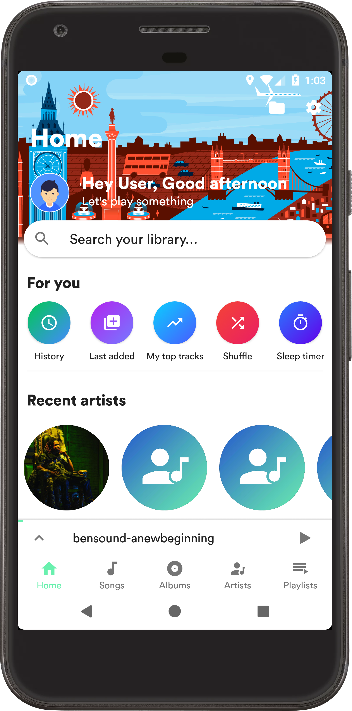
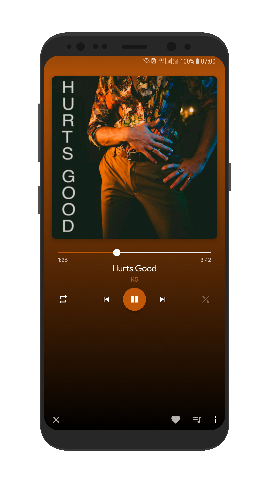

Retro music player
A Hybrid music player between Google Material Design guide lines and iOS Design in mind
Welcome to Retro Music Player
-It's like people choice awards
Screen shots


Screen shots
FAQ's
Having trouble with UI
Enable fullscreen option or disable volume controls.
How to add offline sync lyrics?
STEP 1: Look for song that don’t have lyrics
STEP 2: Search web for desire song lyrics, you have to find either “.lrc” file or lyrics with time stamp for example ”[00:04:02] Some lyrics text”. If you find lyric’s file that’s great or find lyrics text with time stamp you have create “.lrc” file.
STEP 3: Now you have to be rename the file in such way that
STEP 4: You have to copy/ move the file into location in sdcard whatever_sdcard/RetroMusic/lyrics/ paste inside your “.lrc” file.